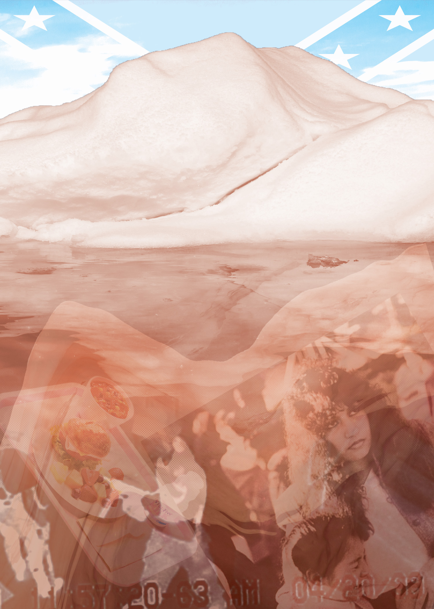
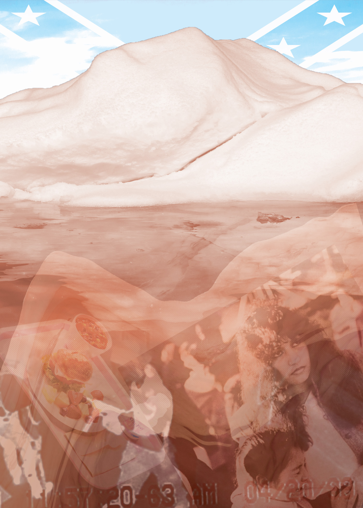

This project was a particularly difficult one as I rarely ever make art with a social message in mind, let alone through photomontage. I ultimately decided to go with addressing the ICE tirades that have gone rampant across the country. I had no idea where to start, but I knew I wanted to do something with actual structures of ice, whether it being an ice cube, glacier, etcetera.
My first piece started with a picture I found on Wikimedia of melting ice cubes on pavement. It wasn't working out, so eventually I found a picture of an ice structure melting over a lake. The most challenging part was trying to search for pictures of actual ice agents, but I eventually found a picture of them loading migrants on a greyhound bus. I cut out the sky and the building behind the bus, and put the image under the lake using Linear Light and Color Burn, as well as playing with the opacity to make them look like they were sinking. I then found a photo of a red sky and put it in the background of the scene to add some extra intensity.
For my second piece, while ICE was still the central subject, it went a bit more figurative with how it was represented. This time I used a glacier and made it the central figure. In the ocean underneath, I placed images that represented school shootings and turned the opacity down as well as used some blending modes like Divide, Vivid and Soft Lights. I then played with the colors of the glacier for it to have colors of the American flag using a Hue/Saturation mask, and in the sky behind the glacier is the confederate flag obscured by lower opacity as well as the base image being put on Pin Light, using the white layer base as tool to bring the piece all together.